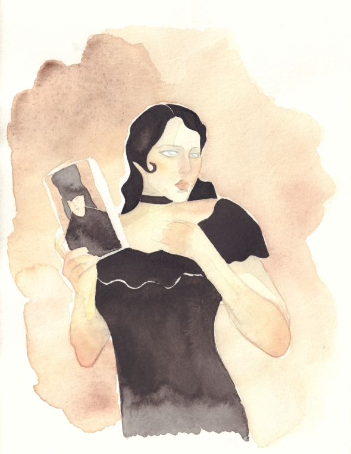

|

|
Il primo giorno di scuola materna ho chiesto di poter disegnare con le matite colorate.
Una passione che non mi ha più abbandonata, ma che è continuata, in un persistente crescendo, sia nella vita di tutti i giorni, sia nel corso della scuola dell'obbligo per poi trovare il suo sbocco naturale nella frequentazione del liceo artistico con il diploma ottenuto nel 2011.
Il mio percorso è proseguito presso l'Accademia Albertina di Torino nella quale ho conseguito sia la laurea triennale nel 2014, sia la laurea magistrale nel 2016, ambedue in scenografia teatrale.
Tale qualifica è stata motiva dalla necessità di acquistare una visione globale di tutti gli aspetti che concorrono alla creazione del prodotto artistico.
Indotta dai sopraddetti propositi, nel 2011-12 ho frequentato il corso annuale di make-up presso la scuola BCM - Scuola Europea di Estetica, Massaggio e Trucco di Milano, conseguendo la relativa certificazione.
Contemporaneamente ai corsi accademici, nel 2014-17, ho frequentato, presso la Comics di Torino, il corso triennale di Illustrazione tradizionale, e, sempre nella stessa scuola, nel 2016-17, il corso annuale di Illustrazione digitale conseguendo le rispettive certificazioni.
La mia formazione artistica, sostenuta dalla passione, è costantemente accresciuta con la partecipazione a workshop di illustrazione organizzati dalle migliori scuole del campo e tenuti da importanti illustratori nazionale ed internazionali.
Ora, sono scesa in campo, per sostenere la sfida più importante, vale a dire, della valutazione di Voi che state leggendo queste righe e che avete visto i miei lavori.
|